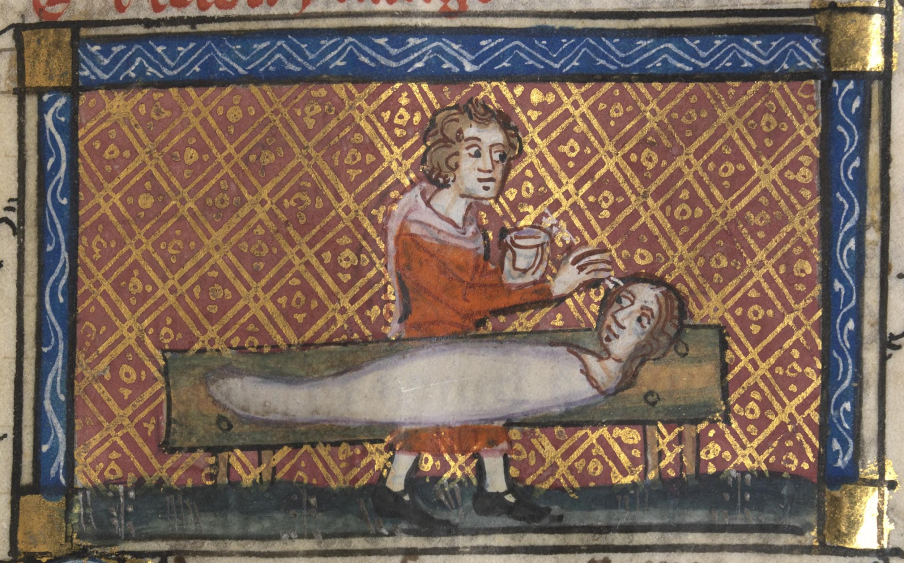

Illustration of Pygmalion working on a sculpture of a woman he would come to fall in love with, from a 14th century manuscript 'The Roman de la Rose'. Image in the public domain, from the National Library of Wales. The story has had many tellers (Ovid, Gilbert, Shaw, etc.), and the story remains a popular trope. Splice (2009), Her (2013), Ex Machina. The story of building oneself (masculine) a bespoke lover (feminine), with perceived shortcomings wholly absent but property rights fully present entails problems and concerns, topics for discussion elsewhere. At least we can note that in many recent versions of the trope, the creation exacts some form of revenge and liberation.
Humanity has a deep history of fascination and obsession at the border of automata and animism, more paths to explore from
e.g. the
paleolithic Löwenmensch (lion man) sculpture, examples from the
Mechanical Art and Design Museum, UK, discussion of Talos (mythological robot guardian of Crete) from
Stanford Univeristy Report.
.jpg){kind=link}